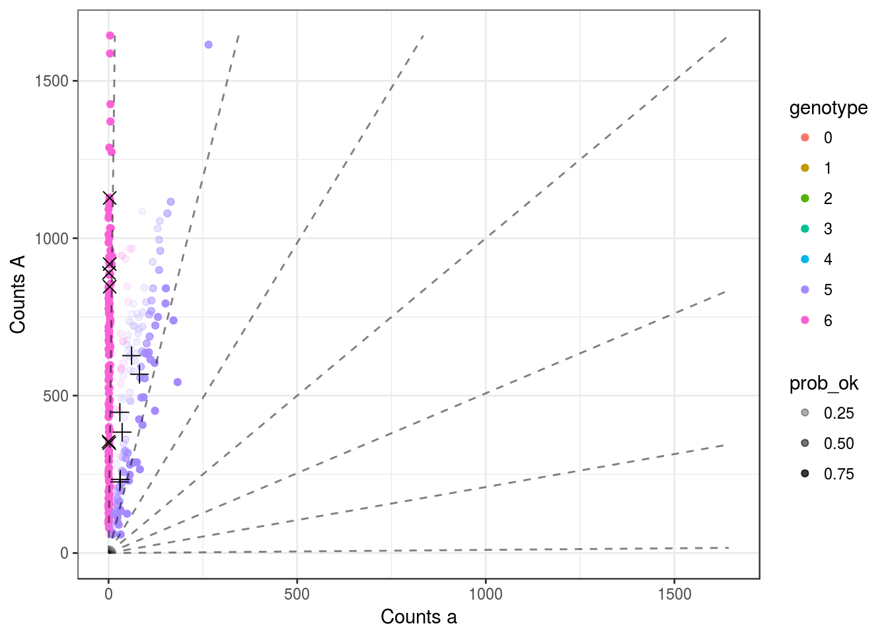

Last updated: 2016-11-28
Code version: 012a46db0668ec4ca7c1a37bb42d86ef68c1006b
Here, I look at my new sequencing error estimation procedure and how it plays with updog.
library(updog)
set.seed(483)
load("../data/subset_David.Rdata")
dat <- subset_david
lastp <- 12 ## number of final rows that are parents
## Run `updog`
cmat <- dat[[7]]
p1dat <- cmat[(nrow(cmat) - lastp + 1):(nrow(cmat) - lastp / 2), ]
p2dat <- cmat[(nrow(cmat) - lastp / 2 + 1):nrow(cmat), ]
odat <- cmat[1:(nrow(cmat) - lastp), ]
p1counts <- p1dat[, 1]
p1size <- rowSums(p1dat)
p2counts <- p2dat[, 1]
p2size <- rowSums(p2dat)
ocounts <- odat[, 1]
osize <- rowSums(odat)
ploidy <- 6Hence, I bound the overdispersion parameter to be a maximum of 1 / (ploidy + 1).
I think we might be able to estimate this by maximum likelihood, but I also have a heuristic scheme to do so too. Let \(\hat{p}\) be the estimated proportions. Keep the values such that \(\hat{p} \geq 1 - \epsilon\) for some fixed \(\epsilon\), then estimate the probability of an “a” given these values. The idea is that the reference allele will be common enough to have many offspring with all “A”’s, in which case we can look how often these observations deviate from all A’s.
uout1 <- updog(ocounts = ocounts, osize = osize, ploidy = ploidy,
update_rho = TRUE, overdispersion = TRUE,
update_geno = TRUE, update_outlier = TRUE, update_pi = TRUE)The estimated sequencing error was 0.0047.
pl <- plot_geno(ocounts = ocounts, osize = osize, ploidy = ploidy, p1counts = p1counts, p1size = p1size,
p2counts = p2counts, p2size = p2size, col = uout1$ogeno, prob_ok = uout1$prob_ok)
print(pl, seq_error = uout1$seq_error)
There are no errors here and I am getting something that looks a lot more intuitive. The estimated overdispersion parameter is 0.0046.
sessionInfo()R version 3.3.2 (2016-10-31)
Platform: x86_64-pc-linux-gnu (64-bit)
Running under: Ubuntu 14.04.5 LTS
locale:
[1] LC_CTYPE=en_US.UTF-8 LC_NUMERIC=C
[3] LC_TIME=en_US.UTF-8 LC_COLLATE=en_US.UTF-8
[5] LC_MONETARY=en_US.UTF-8 LC_MESSAGES=en_US.UTF-8
[7] LC_PAPER=en_US.UTF-8 LC_NAME=C
[9] LC_ADDRESS=C LC_TELEPHONE=C
[11] LC_MEASUREMENT=en_US.UTF-8 LC_IDENTIFICATION=C
attached base packages:
[1] stats graphics grDevices utils datasets methods base
other attached packages:
[1] updog_0.1.0 knitr_1.15
loaded via a namespace (and not attached):
[1] Rcpp_0.12.7 digest_0.6.10 assertthat_0.1 plyr_1.8.4
[5] grid_3.3.2 gtable_0.2.0 magrittr_1.5 evaluate_0.10
[9] scales_0.4.1 ggplot2_2.2.0 stringi_1.1.2 lazyeval_0.2.0
[13] rmarkdown_1.1 labeling_0.3 tools_3.3.2 stringr_1.1.0
[17] munsell_0.4.3 yaml_2.1.14 colorspace_1.3-0 htmltools_0.3.5
[21] tibble_1.2